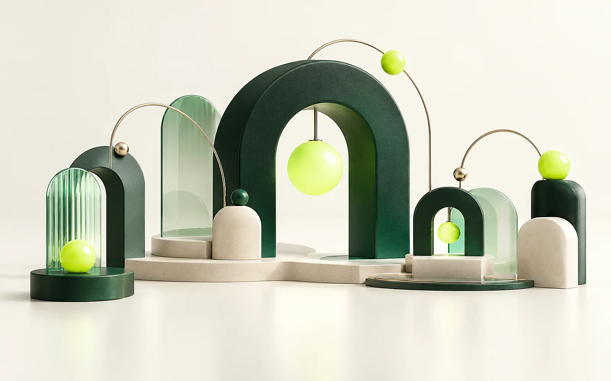

رسالتنا
تحويل الاحتياج إلى تجربة مفيدة.
نربط فهم المستخدم بتصميم البرمجيات، ونستكشف أين تستطيع الحلول الرقمية أن تقلّل التعقيد وتقرّب الناس من الخدمات والمعرفة والفرص.
من نحن / Smart Land
نتخيّل شركة تجمع الاستشارات والبرمجيات والذكاء الاصطناعي حول فكرة بسيطة: أن تجعل التقنية الخطوة التالية أكثر وضوحاً وفائدة.
Smart Land شركة افتراضية ضمن مشروع تعليمي. تأسيس عام 2011 ومحفظة المشاريع مستمدّان من موجز الوظيفة؛ بقية الهوية سرد تصميمي لهذا الموقع.

01 / وجهتنا
رسالة ورؤية تصفان كيف نريد أن تبدو
هذه الشركة الافتراضية وتجاربها الرقمية.
رسالتنا
نربط فهم المستخدم بتصميم البرمجيات، ونستكشف أين تستطيع الحلول الرقمية أن تقلّل التعقيد وتقرّب الناس من الخدمات والمعرفة والفرص.
رؤيتنا
نتصوّر عالماً تصبح فيه الأدوات الرقمية أوضح وأكثر إتاحة، وتعمل فيه التطبيقات والمنصات كجسور بين القطاعات واحتياجات الإنسان.
كلمات مباشرة، وخطوات يعرف المستخدم أين تبدأ وإلى أين تقوده.
محتوى يمكن فهمه بطرق مختلفة، مع احترام اختلاف قدرات المستخدمين.
حلول تربط الفكرة بالواجهة، وتجربة الفرد بسياق العمل الكامل.
نسخة واضحة قابلة للتجربة والتعلّم والتحسين، دون وعود مبهمة.
02 / رحلة الفكرة
تسلسل يشرح هوية الشركة المتخيّلة.
المراحل التالية سرد موضوعي بلا تواريخ تاريخية مفترضة.
تنطلق الفكرة من شركة تقدّم حلولاً برمجية متطورة ومخصصة لاحتياجات قطاعات مختلفة.
التفكير في المهام والخطوات والشاشات التي تجعل التطبيق أو المنصة أداة مفيدة للمستخدم.
التواصل والإتاحة والعقارات والمركبات والتعليم والتجارة وإدارة المشافي تجمعها محفظة واحدة في موجز المشروع.
استكشاف دور الذكاء الاصطناعي ضمن احتياج واضح، مع شرح الحدود وإبقاء المراجعة البشرية حاضرة.
03 / كيف نفكّر؟
نحدّد الفئات المستهدفة والمشكلة والسياق قبل التفكير في الحل.
نرسم مسارات الاستخدام ونحوّل الأفكار إلى واجهات قابلة للنقاش.
نجمع المحتوى والتفاعل والوسائط في تجربة متماسكة.
نتحقق من وضوح الخطوات وتوافق العرض، ثم نحدّد ما يحتاج إلى تحسين.
04 / أدوار متكاملة
تصوّر للأدوار التي تتكامل لبناء الحلول، وليس قائمة بأشخاص أو موظفين حقيقيين.
ربط احتياج المستخدم بهدف المشروع وترتيب الأولويات.
صياغة مسارات وواجهات ومحتوى واضح يدعم سهولة الاستخدام.
تحويل التصوّر إلى وظائف مترابطة يمكن تشغيلها وتجربتها.
تحديد ما يلزم من بيانات ومراجعة حدود الحل ومعايير التحقق.
05 / الفكرة في مشاريعنا
تابع الاستكشاف
استكشف نموذج MyKey التفاعلي، أو انتقل إلى معلومات التواصل التوضيحية للشركة.